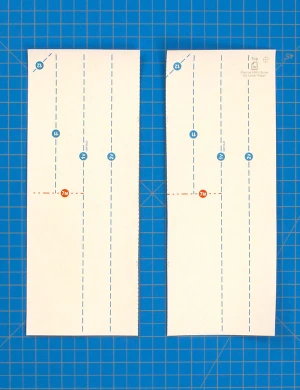
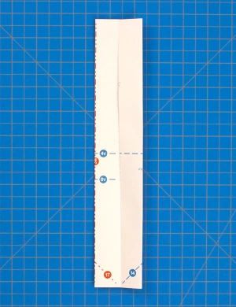
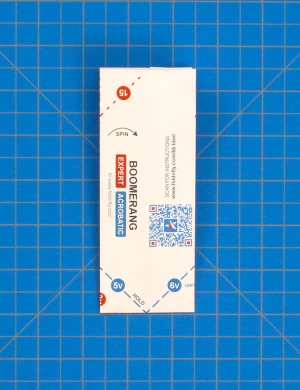
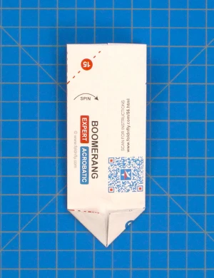
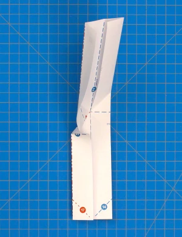
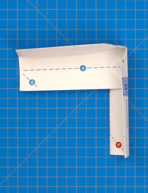
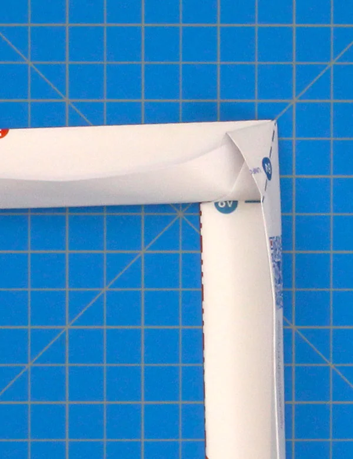
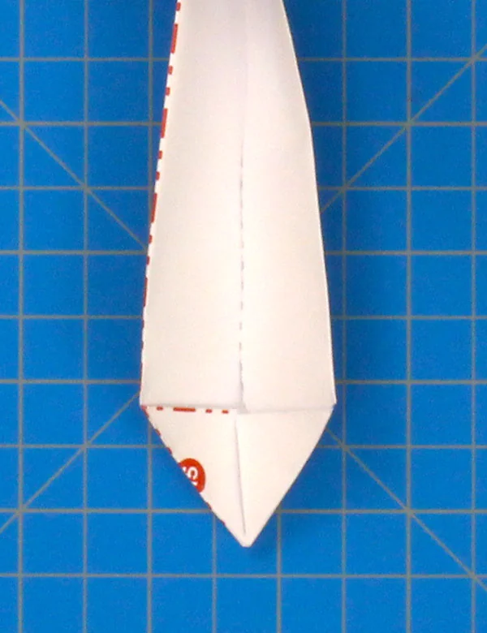
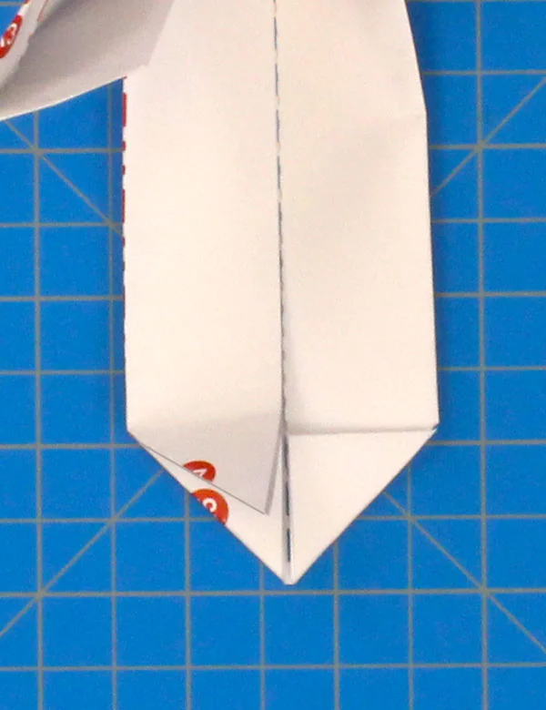

1Step 1
Crease in half, open it, cut on that crease, and keep one half — save the other for a second boomerang.

Crease in half, open it, cut on that crease, and keep one half — save the other for a second boomerang.

Crease in half, open it, then fold both sides into the middle.

Fold the other way and turn the packet so the folded edge sits at the bottom.

Bring both corners into the middle and burnish the creases sharp.

Undo the last two folds, open the left flap, and pinch the middle so it creases the other way.

Keep rotating and flattening that pinched piece until you have an L with upright walls.

Take the vertical wall on the wider side and fold it down. Then fold the other wall down flat as shown in the guide.

Slightly open the previous fold and tuck the corner into the pocket made by the previous step as shown in the guide.

Press everything flat as shown in the guide.

Open up each tip and fold the corners into the middle as shown in the guide.

For each of the thicker corner pieces folded in with the previous step, unfold and then use an accordion fold to tuck the corner into the inside as shown in the guide.

Fold the other two corners into the pockets made by the previous step as shown in the guide.

Fold everything flat and make sure it lays on the table without any warps as shown in the guide.
With a calm day and a level throw, expect roughly 8–11 metres (about 26–36 feet). Among the 37 distance-rated designs in this collection it ranks #33. Wind, paper weight, and small crease errors all change the result.
A well-trimmed Return-Curve Flyer should hold a very brief flight; the design is not aimed at hang time. Launching from a higher spot and keeping the wings level will extend it.
It is best for tricks and loops. Folding skill is master. Use Letter & A4, 13 steps, needs a cut.
Use a quick wrist snap and a fairly firm throw so the plane has enough speed to complete its maneuver.